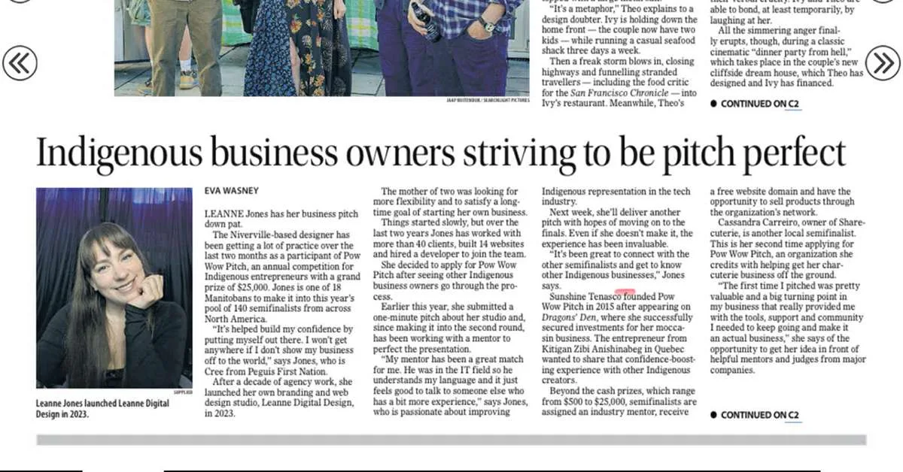

Indigenous
Leanne Digital Featured in the Winnipeg Free Press

I’m so excited to share that I was recently featured in the Winnipeg Free Press!
Eva Wasney wrote an article highlighting Indigenous entrepreneurs participating in this year’s Pow Wow Pitch, and I’m honoured to be included alongside so many inspiring business owners.
The story talks about my journey as an Indigenous Graphic Designer from Peguis First Nation—how I launched Leanne Digital in 2023 after more than a decade in agency work, and how Pow Wow Pitch has helped me grow my confidence as a business owner.
Here’s one of my favourite quotes from the piece:
“It’s helped build my confidence by putting myself out there. I won’t get anywhere if I don’t show my business off to the world.”
Leanne Jones
That’s exactly what Pow Wow Pitch has been for me—an opportunity to practice sharing my story, connect with other Indigenous entrepreneurs, and push myself outside my comfort zone.
What this means for me
Recognition – Being featured in one of Manitoba’s largest news outlets is a huge milestone for my business.
Representation – Indigenous voices in tech and design matter. I want to keep creating space for more of us to be seen.
Momentum – This experience fuels me to keep going, keep pitching, and keep growing.
Read the Full Article
If you’d like to read the full story, you can check it out here: Winnipeg Free Press – Indigenous business owners striving to be pitch perfect(published August 29, 2025).
I’m beyond grateful for the support I’ve received so far—from my mentor at Pow Wow Pitch, to my clients, family, and community. This is just the beginning, and I can’t wait to see where this journey takes me.
Final Thoughts
Seeing this work in the Winnipeg Free Press still means a lot. If you are building a brand or a website and want a studio that treats that story with care, we would love to hear from you.
Work with us
Want to work with the studio in that story?
This post shares Leanne’s Winnipeg Free Press feature and what Pow Wow Pitch meant for the business.
If you want help with Indigenous graphic design or website design, contact Leanne Digital.
Frequently Asked Questions
Where can I read the Free Press article?
The blog post links out to the Winnipeg Free Press story by Eva Wasney on Indigenous entrepreneurs in Pow Wow Pitch.
What is Pow Wow Pitch?
Pow Wow Pitch is an Indigenous-led non-profit that supports Indigenous entrepreneurs with capital, mentorship, training, and community.
Is Leanne Digital Indigenous-owned?
Yes. Leanne is a member of Peguis First Nation. The studio is CCIB certified and based in Winnipeg on Treaty 1 territory.
How do I hire Leanne Digital?
Use the contact page to send a message or book a call. Tell us whether you need a website, branding, SEO, or ongoing support.